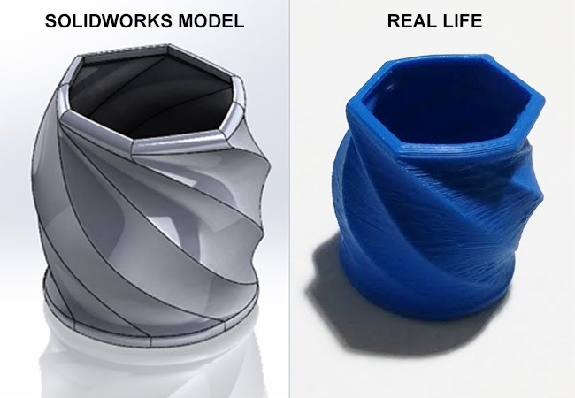

3D Printed Container
This assignment was designed for students to model their own containers or cups. Part of the goal of the assignment was to be familiar with the Loft tool in Solidworks. Not only that, but it also practices our extrusions, sketches, geometrical features, and shelling. We were given parameters that we have to follow for the design to make sure it’s printable using the 3D printer. modeling, since it teaches us about the usage of 3D printing, how to 3D model and how to prepare a file for the 3D printers. This assignment can also help students in the long-term for 3D
This assignment was designed for students to model their own containers or cups. Part of the goal of the assignment was to be familiar with the Loft tool in Solidworks. Not only that, but it also practices our extrusions, sketches, geometrical features, and shelling. We were given parameters that we have to follow for the design to make sure it’s printable using the 3D printer. modeling, since it teaches us about the usage of 3D printing, how to 3D model and how to prepare a file for the 3D printers. This assignment can also help students in the long-term for 3D
PRESENTATION